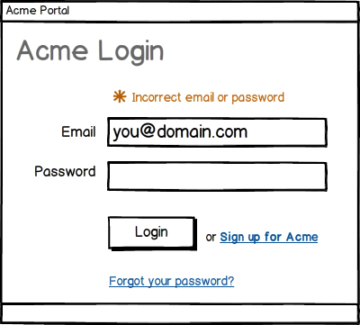
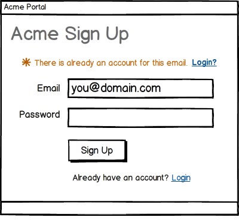
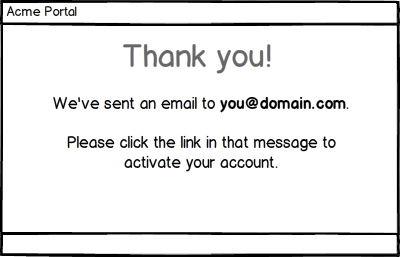
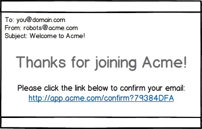
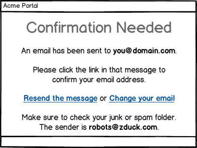
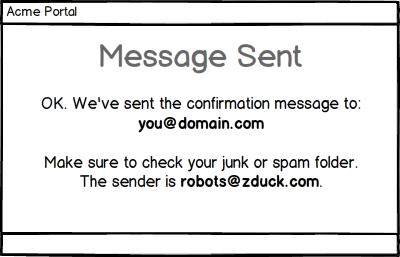
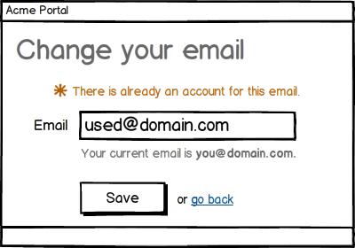
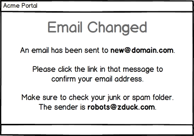

User sign up and email confirmation, a UX boilerplate
• http://joshua.poehls.me/2013/user-sign-up-and-email-confirmation-a-ux-boilerplate/
Sign up, confirm your email address, login. The three steps that almost all web apps share.
It isn’t hard to get this process right but it does take some planning. I’ve had to implement this a lot so I finally decided to document it. This is my boilerplate for a user sign up process. The interaction flow that I use as the starting point for sign-ups in my apps. Along the way I’ll point out some key UX (User eXperience) tips. I hope this saves you some time on your next project.
The UI mockups are just that. Mockups. This post isn’t about the UI of your pages but rather the flow and functionality. The mockups are intended to communicate features, not a specific design or layout.
Login
The login is so obvious that it is hardly worth mentioning.

- Show friendly messages for invalid credentials.
- Don’t make them re-enter their username on subsequent attempts.
- Set the initial focus to the username input. It’s the little things.
- Provide a link for the user to sign up. They may land on the login page but not have an account, make it easy on them.
- Provide a link for resetting their password.
You should never provide a password recovery link because you should NEVER be able to recover their password. How should you store passwords?
Sign Up
The sign up process is arguably the most important part of your app. This is the gateway through which all users must pass. Every failure means lost users.
I’m going to simplify the sign up process to the absolute bare essentials.

- Show a friendly message and login link if the username is already linked to an account. If they click that login link, then navigate to the login form and pre-populate the username field.
- Provide a link for the user to login if they already have an account. Just because they are on the sign up page doesn’t mean they don’t have an account. Make it easy.
If you collect an email address during sign up then consider adding logic to suggest corrections to commonly misspelled domains. For example, if the user enters “user@gnail.com” you can ask, “Did you mean: user@gmail.com?”.
You can read more about this or skip straight to the jQuery plugin, Mailcheck.
Confirmation email
I’m going to assume your app requires a valid email address. Most do. If yours doesn’t then your job just got a lot easier!
After signing up, the next page your users see is:

- Tell them what email address you sent the confirmation to.
- Tell them what to do with the message they receive.
The confirmation email they receive:

- Show the link URL if you are sending an HTML email. This will ensure that users with a plain text mail client can still see the link.
- Clicking the link should automatically log the user in. You had to have their credentials in order to send the email and the email has been verified - there is no reason not to login them in.
Ideally you should send the email with both a plain text and HTML body. This ensures that the user gets the best experience possible for their mail client. Read up on MIME multipart/alternative for more information.
They didn’t see the email
There is always the chance that the user will not receive the confirmation email or that they will simply ignore it. We need to plan for this.
If they try to continue without confirming their address:

- Tell them what the problem is, e.g. “confirmation needed”.
- Remind them what email address the confirmation was sent to.
- Tell them again what they should do with that message.
- Remind them to check their junk or spam folders and help them out with the search by telling them who the sender was.
- Give them an option to resend the message.
- Give them an option to change their email address.
Resending the confirmation
Maybe the user’s mail server was offline. Maybe they deleted your message without reading it. Maybe it got trapped by an over zealous spam filter. There are any number of ways the message might get lost. The ability to have it re-sent is a great UX booster that might just save you an otherwise lost user.

Changing their email
This is another little detail that can make a big difference. Maybe the user entered the wrong email. Maybe they just can’t get that account to work and want to try another address. At this point there is little reason not to let them simply enter a different address. Let me explain:
- Their account is already in an unconfirmed state. Since we have no way to know that the current (unconfirmed) email is valid, there isn’t any harm in letting them change it to another email.
- They already entered their username and password. Combined with the fact that the existing email is unconfirmed this should be reasonable enough verification of the user’s identity.

- Show them their current address on the change form.
The confirmation should be sent to the new address and a friendly message shown once again.
All previously sent confirmation links should be disabled at this point for security. You wouldn’t want the wrong address to be confirmed, you only want the new one.

That’s all folks
That is my boilerplate. I believe it covers the requirements that nearly all sign up forms share and will keep at least this dude from having to rethink the process in the future.
In the end all is simple but we have a few guiding principles:
- Be obvious. At every point give the user all the information they need to make a decision or take the required action.
- Be simple. Keep all of your forms as lean as possible. Collect any extra profile or account information after the initial sign up. This keeps the barrier of entry as low as possible.
- Be helpful. Give the user the ability to undo their mistakes and troubleshoot. Resending the confirmation and changing their email address being the prime examples.
- Be easy. Whenever you can save the user a step, do it. Such as logging them automatically when they click the confirmation link.
Feel free to use and tweak the Balsamiq mockups that I created for this post. You can download them here.